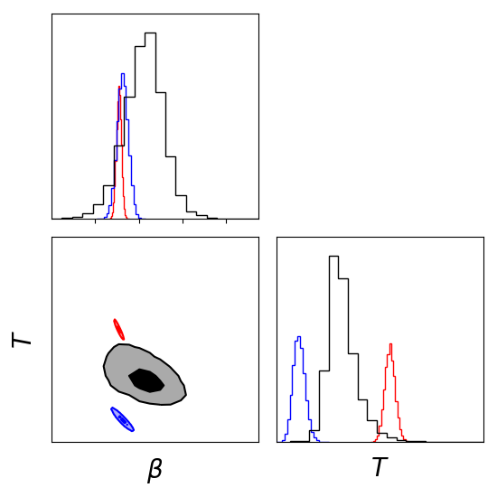
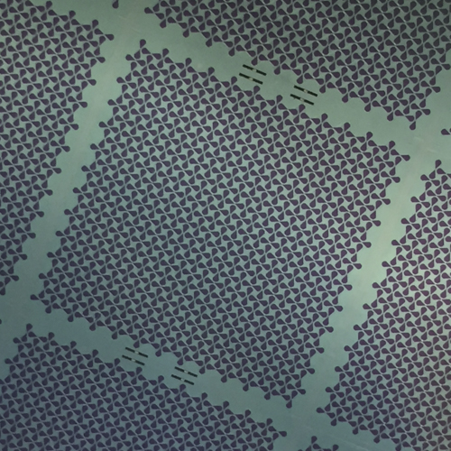

I am a Ph.D. candidate in Physics advised by Bill Jones. My primary research work is in experimental cosmology studying the cosmic microwave background (CMB). I am a member of the SPIDER collaboration, a balloon-borne CMB polarimeter, and I have been fortunate to be involved in all aspects CMB: detector design, integration, characterization, and analysis. I am part of the integration team of SPIDER II and was part of its successful deployment during the 2022/2023 Antarctic season.
More generally I am interested in systems engineering and getting good data from machines: from designing and building more sensitive instruments to developing statistical techniques to extract information from noisy measurements. I love all things space!
cshiu at princeton.edu
Physics Department
Princeton University
Projects
|  | |||||||||||
| Component Separation I have been a part of the SPIDER I high level analysis and have developed two different analysis pipelines that separate out astrophysical foregrounds from the underlying cosmological signal. One is in spectral space: spectral matching independent component analysis (SMICA). This result has been pushed through to a constraint on the scalar-to-tensor ratio r and has been published in SPIDER I's B-mode cosmological constraints. Another analysis is in pixel space that can identify and distinguish different populations of dust. This project is currently a manuscript in preparation. |
|||||||||||
 |
|||||||||||
|
SPIDER II Hardware My hardware focus has been the integration of SPIDER II in preparation for deployment. My primary duties include cryogenic operations, hardware integration, and characterizing the thermal and optical performance of the instrument as a whole. |
||||||||||
|  | |||||||||||
| Dualband phased antenna arrays I led the electromagnetic design, layout, and testing of a diplexed (25-45GHz) bowtie antenna array for CMB polarimetry. The primary purpose of this camera is to control for galactic synchrotron foregrounds. A prototype device was successful in achieving the designed bandwidth and had modest optical efficiency. This device was deployed in 2019 with BICEP Array. Further design work has been done to improve the optical efficiency with improvements to the band separation of the detectors. |
|||||||||||
Publications
With major contributions- A Constraint on Primordial B-Modes from the First Flight of the SPIDER Balloon-Borne Telescope.
SPIDER Collaboration: ... Shiu. C ...
The Astrophysical Journal [2022]
- In-flight gain monitoring of SPIDER's transition-edge sensor arrays.
J. P. Filippini, A. E. Gambrel, A. S. Rahlin, E. Y. Young, et. al.
Journal of Low Temperature Physics [2022] - A Simulation-Based Method for Correcting Mode Coupling in CMB Angular Power Spectra.
J. S.-Y. Leung, J. Hartley, J. M. Nagy, C. B. Netterfield, J. A. Shariff, et. al.
The Astrophyical Journal [2022] - The XFaster Power Spectrum and Likelihood Estimator for the Analysis of Cosmic Microwave Background Maps.
A. E. Gambrel, A. S. Rahlin, X. Song, C.R. Contaldi, et. al.
The Astrophysical Journal [2021] - Design and pre-flight performance of SPIDER 280 GHz receivers.
E. C. Shaw, et. al.
Proc. SPIE 11453, Millimeter, Submillimeter, and Far-Infrared Detectors and Instrumentation for Astronomy [2020] - Probing Cosmic Reionization and Molecular Gas Growth with TIME.
G. Sun, T. C. Chang, B. D. Uzgil, et. al.
The Astrophysical Journal [2020] - 280 GHz Focal Plane Unit Design and Characterization for the SPIDER-2 Suborbital Polarimeter.
A.S. Bergman, et. al.
Journal of Low Temperature Physics [2018] - Low Noise Titanium Nitride KIDs for SuperSpec: A Millimeter-Wave On-Chip Spectrometer.
S. Hailey-Dunsheath, E. Shirokoff, et. al.
Journal of Low Temperature Physics [2016]
-
Design considerations to improving sensitivity in SuperSpec: an onchip KID-based, mm-wave spectrometer.
Caltech Senior Thesis [2015]
-
Stay tuned...